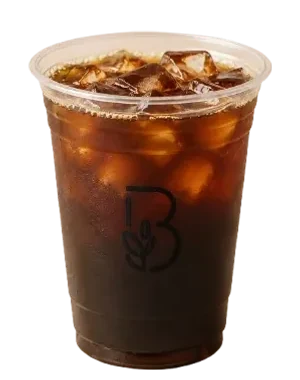
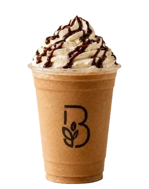
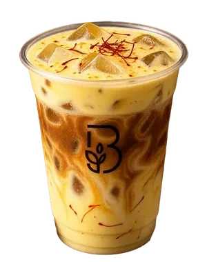
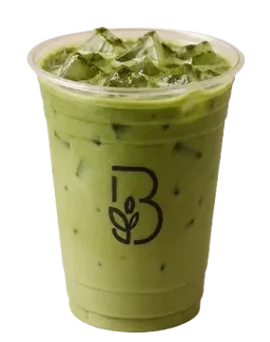
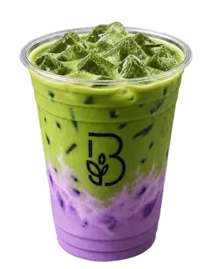

Iced
Americano
Two shots, cold water, a lot of ice.
نكهة تِعدل المزاج
Every day · 7 am – 12 am
Espresso still costs about a dollar
Beans we pick ourselves, drinks pulled and whisked to order, and a corner worth sitting in once you have one.
See the drinks Open the full menu
Ankawa · Erbil

On the counter
Seven of forty‑six. The rest hang on the board — open it any time.
Swipe to explore

Iced
Americano
Two shots, cold water, a lot of ice.

Caramel
Frappé
Blended caramel and coffee. Cream on top, sauce over that.

Cold Foam
Saffron Milk
Saffron steeped into the milk, salted cold foam poured over.

Iced
Matcha
Whisked to order, never pre‑mixed. Grassy and clean.

Ube
Matcha
Purple yam against matcha, coconut on the finish.
The maths
Five espressos on the board, from 1,500 IQD. The exchange rate wanders about; the espresso is the same either way.
One thousand five hundred Iraqi dinar is about one US dollar, which buys one espresso.
The full board
The whole board hangs above the counter. Same list, same prices, nothing hidden behind a menu you have to ask for.
Open the full menu Prices in Iraqi dinar. The board changes with the season.
Visit
Marble tables, green benches, and enough room to stay past your cup.
Beanery Cafe
بينيري كافيه
Four Towers
Ankawa, Erbil, Iraq
Open daily 7 am – 12 am